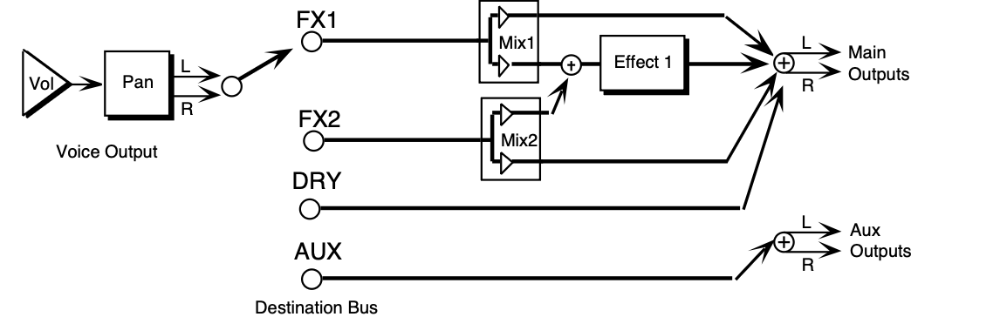
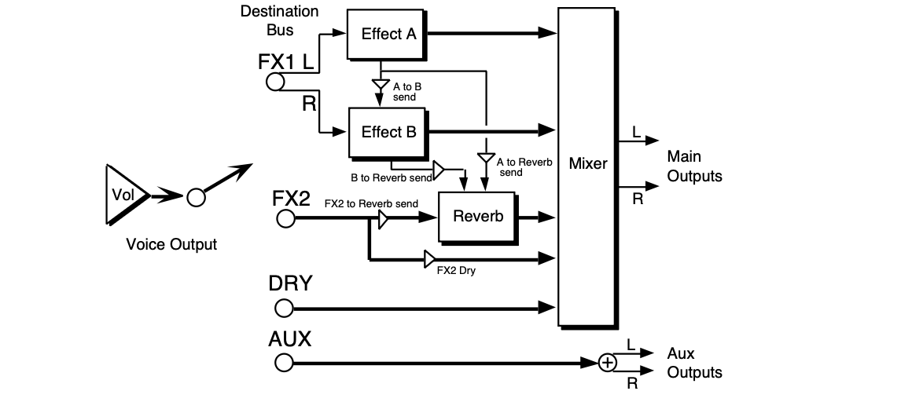

Performance / Composition Synthesizer · Version 3.0
Section 6 — Understanding Effects
This section offers a basic overview of the concepts involved in selecting, creating, editing, and understanding Effects. For more detailed descriptions of the actual effect parameters, refer to the following section.
Understanding TS-10 Effects
The TS-10 has a powerful built-in signal processor that can produce a variety of effects. More important, its functions are integrated into, rather than added onto, the rest of the synthesizer. The flexible bus routing scheme and extensive real-time control give the TS-10 its dynamic effects capability.
The TS-10 is equipped with an advanced digital signal processing system based on the ENSONIQ Signal Processor (ESP) chip. The ESP is designed specifically for digital audio signal processing, and in the TS-10 it works in tandem with a fourth-generation version of the Digital Oscillator Chip (DOC IV a.k.a. OTTO) and an external 16-bit digital-to-analog converter to provide a very high-quality output signal.
Digital effects processing capability has been designed to complement the advanced performance features of the TS-10, and all of the effects can have any parameter modulated by various performance controllers such as the Mod Wheel, Poly-Key™ pressure, and other user-definable controllers.
All effects are fully programmable and may be customized for particular applications. Effects are most often stored as part of a sound, although each preset may also have its own override effect, independent of the effects contained by the sounds within the preset. Each individual sequence and song also has an independent effect. The following sections describe each type of effect.
Program and Sampled Sound Effects
Each sound in the TS-10 contains an effect and a complete set of parameter values which determine how that effect will sound. The effect is present even if none of the voices in the sound are routed through the effect (e.g. all voices are sent to the DRY or AUX destination bus - see the Output page in Section 9 — Program Parameters). Whenever you save or write a sound, the effect settings are also saved with the sound.
The sound effect is displayed and edited by pressing the Program Effects button. These Effect Parameter pages are described in detail in Section 7 — Effect Parameters.
If the preset effect that is currently loaded and being heard is different than the sound effect that is being shown, then a flashing MUTE will appear in the lower left corner of the display.
Preset Effects
Each preset in the TS-10 also contains an effect and a complete set of effect parameter values. The effect is present even if none of the tracks in the preset are routed through the effect (e.g. all tracks are sent to the DRY or AUX destination bus - see Section 5 — Preset/Track Parameters). Whenever you save or write a preset, the effect settings are also saved with the preset.
The preset effect is the same as the effect contained in the primary selected sound in the preset, but can easily be changed to suit the needs of the preset more closely. This effect applies to all preset tracks (or their program voices) that are routed to either the FX1 or FX2 destination bus.
The preset effect is displayed and edited by pressing the Track Effects button in the Track Parameters section of the front panel, when the TS-10 is in either Sounds or Presets mode.
The top level page controls the re-routing of the voices without editing the sound itself, and is described in Section 5 — Preset/Track Parameters. The next page allows you to define which tracks will send controller information to the effect. The remaining pages contain the effect parameters, which are specific to the effect type. These effect parameter pages are described in Section 7 — Effect Parameters.
Sequencer Effect
Like each of the presets in the TS-10, each sequence and song contains an effect and a complete set of effect parameter values. The effect is present even if none of the tracks in the sequence are routed through the effect (e.g. all tracks are sent to the DRY or AUX destination bus - see Section 5 — Preset/Track Parameters). This effect applies to all sequencer tracks (or their program voices) which are routed to either the FX1 or FX2 destination bus.
The effect is saved with each sequence or song. It will remain unaffected until a new song or sequence is selected, unless it is specifically edited. A special incoming MIDI program change message may be used to load new effects into a sequence in MULTI mode (see Section 3 — MIDI Control Page Parameters). The Copy function and a special mode of Copy Preset to Sequence can be used to replace the Sequence effect.
The sequencer effect is displayed and edited by pressing the Track Effects button in the Track Parameters section of the front panel, when the TS-10 is in Sequencer mode.
Selecting Effects
The first parameter of the Effects page is the effects selector. Changing this parameter causes a new effect to be selected, which in turn changes the type of parameters that will be available on the rest of the pages. Selecting a new effect algorithm will automatically set all of the effect parameters to their default values for the new effect. The available effects algorithms are:
| 00 DRY/BYPASSED | 25 LARGE PLATE REVERB 1 | 50 EQ- -CHORUS + EQ- -DDL |
| 01 DDL+CHORUS+REV | 26 LARGE PLATE REVERB 2 | 51 FLANGER + REVERB |
| 02 EQ- -DDL+CHORUS+REV | 27 HALL REVERB 1 | 52 EQ- -FLANGER + DELAY |
| 03 DELAYLFO+CHORUS+REV | 28 HALL REVERB 2 | 53 PHASER + REVERB |
| 04 ROTOSPKR+CHORUS+REV | 29 HALL REVERB 3 | 54 PHASER + DELAY |
| 05 DISTORT+CHORUS+REV | 30 SMALL ROOM REVERB | 55 EQ- -TREMOLO + DELAY |
| 06 PARAM EQ+CHORUS+REV | 31 MEDIUM ROOM REVERB | 56 EQ- -VIBRATO + DELAY |
| 07 ENV VCF+CHORUS+REV | 32 LARGE ROOM REVERB | 57 PITCH SHIFTER |
| 08 DDL+PHLANGR+REV | 33 TIGHT AMBIENCE | 58 FAST PITCH SHIFTER |
| 09 EQ- -DDL+PHLANGR+REV | 34 WIDE AMBIENCE | 59 PITCH SHIFTER + DELAY |
| 10 DELAYLFO+PHLANGR+REV | 35 NONLINEAR REVERB 1 | 60 ROTARY SPEAKER + REV |
| 11 ROTOSPKR+PHLANGR+REV | 36 NONLINEAR REVERB 2 | 61 SPEAKER CABINET |
| 12 DISTORT+PHLANGR+REV | 37 NONLINEAR REVERB 3 | 62 TUNABLE SPEAKER |
| 13 PARAM EQ+PHLANGR+REV | 38 GATED REVERB | 63 GUITAR AMP 1 |
| 14 ENV VCF+PHLANGR+REV | 39 REVERSE REVERB 1 | 64 GUITAR AMP 2 |
| 15 DDL+ROTOSPKR+REV | 40 REVERSE REVERB 2 | 65 GUITAR AMP 3 |
| 16 EQ- -DDL+ROTOSPKR+REV | 41 STEREO DELAY + DELAY | 66 VCF- -DISTORTION- -VCF |
| 17 DELAYLFO+ROTOSPKR+REV | 42 MULTITAP DELAY | 67 WAH- -DISTORTION + REV |
| 18 ROTOSPKR+ROTOSPKR+REV | 43 EQ- -STEREO DELAYLFO | 68 FLNG- -CMP- -DIST + REV |
| 19 DISTORT+ROTOSPKR+REV | 44 EIGHT VOICE CHORUS | 69 DISTORT + CHORUS- -REV |
| 20 PARAM EQ+ROTOSPKR+REV | 45 CHORUS + REVERB 1 | 70 PARAMETRIC EQ |
| 21 ENV VCF+ROTOSPKR+REV | 46 CHORUS + REVERB 2 | 71 EQ- -COMPRESSOR |
| 22 PLATE + PLATE REVERBS | 47 DDL- -CHORUS + REVRB 1 | 72 RUMBLE FILTER |
| 23 PARAMETRIC EQ + PLATE | 48 DDL- -CHORUS + REVRB 2 | 73 VAN DER POL FILTER |
| 24 SMALL PLATE REVERB | 49 EQ- -CHORUS + REVERB |
What is an Algorithm?
An algorithm is the basic signal processing building block in the TS-10. The word “effect” could be used instead of algorithm, but some algorithms can produce several sonic effects simultaneously. Each algorithm has a set of parameters used to control the effect(s) it produces.
The values of these parameters are saved with the algorithm. Wherever applicable, we will refer to the TS-10 effects as algorithms.
Signal Routing Between Effects
If the algorithm consists of two or more different types of effects, the algorithm name has symbols that show how these different effect types are routed together. The routing symbols are:
-- indicates a serial connection from the effect on the left into the effect on the right.
+ indicates a parallel connection between the effect on the left and the effect on the right.
Sounds and Presets
The complete effects setup, including the values of all effect parameters, is saved when you save a sound. It is also saved when you save a preset. The TS-10 tries to be smart about switching effects, since all sound must stop for an instant when it changes effects.
When are New Algorithms loaded into the ESP Chip?
Whenever a new algorithm is loaded into the ESP, the audio output will pause briefly, allowing the instructions which create the new algorithm to be loaded into the ESP. If an algorithm differs only by variation in parameter values, then this pause may not occur.
These are the rules that the TS-10 follows in deciding when to change algorithms:
1) When you select a primary sound from one of the Sound Bank pages, the algorithm saved in that sound will be loaded into the ESP, and you will hear the sound with its algorithm. If you layer a sound by double-clicking, its algorithm will not be loaded.
2) When you select or layer sounds/tracks from a preset or Track Parameter page, the algorithm is not changed.
3) When you change the sound on a track from Replace Track Sound mode (e.g. with the Sounds LED flashing), the algorithm will not be changed.
4) When you change the sound on a track by double-clicking the Replace Track Sound button (e.g. with the Sounds and the Replace Track Sound LED flashing), the algorithm will be changed.
5) When you select a preset, the algorithm saved in that preset will be loaded into the ESP.
6) When you select a song or sequence, the algorithm saved in that song or sequence will be loaded into the ESP.
7) Whenever you go from Sounds mode to Sequencer mode (by pressing Seqs/Songs) the sequencer algorithm is loaded. The same is true when going from Sequencer mode to Sounds mode (by pressing Sounds).
8) Saving either the sound or the preset will save the current algorithm.
9) Should you start editing a sound while an algorithm other than its own is active, a warning will appear, reminding you that you are not hearing the algorithm you are seeing or editing. This warning appears as MUTE, flashing in the lower left corner of the display.
10) When MIDI program changes 60-119 are received in MULTI or MONO B modes, the sequence or song effect algorithm will be loaded with the one in the program change.
Performance Control of Tracks in Preset or Sequencer Mode
When the TS-10 is in Presets or Sequencer mode, all the instruments in the internal memory are routed through the same global effect. In order to gain some individual control for each track, two additional sub-pages on the Track Effect page determine how each instrument will interact with the algorithm. The algorithm for the current preset, song, or sequence is edited by pressing the Track Effects button in the Track Parameters section of the front panel.
The first time it is pressed, it shows the Effects Output Routing parameter for each of the three tracks in a performance preset (or for 6 of the 12 tracks of the current song or sequence in Sequencer mode). The Effects Output Routing sub-page determines which of the Output Busses the track will be sent through. By using this parameter, you can give individual instruments different Dry/Wet or multiple effect mixes.
The second press shows the Effect Mod Controller page. This parameter determines whether or not the controllers of a particular track will be routed to control the effect. This is an important setting when in Presets or Sequencer mode; since all tracks are routed through the same effect, it could be confusing to have multiple instruments sending conflicting controller information to the effect. If more than one track is set to CNTRL-FX, “controller fights” can occur. If set to NO-CNTRL, a track will remain routed to the effects, but its controllers (such as the TIMBRE, PBEND, WHEEL, etc.) will not affect the track.
Subsequent presses reveal the effects programming parameters, which are identical to those found on the Program Effects page.
Programming Effects
The TS-10 algorithms are fully programmable. The first sub-page contains the effect selector.
The effect selector is a little different than all of the other parameters. It controls how all of the other effect pages will be configured and displayed. When this parameter is changed, a new algorithm is selected which causes several important things to occur:
• a new algorithm is loaded, causing a brief pause in the audio output
• the effect parameter pages are redefined for the particular effect selected
• the effect parameter values are reset to their default settings for the effect
Effect Variations The first effect parameter page is similar for all of the effects (the display shows VARIATION=).
It selects an Effect Variation, which feature various “preset” patches, letting you quickly access several set-ups within the same effect. Each algorithm has a predetermined amount of variations.
Each of these variations is individually editable and can act as independent effect edit buffers.
Each Effect Variation can have two different Modulation Sources, Destination parameters, and defined modulation ranges.
The Effects Busses
The output of every voice in the TS-10 is assigned to a stereo bus. A bus, like the bus of a mixing board, mixes together all the voices assigned to that bus into a single stereo pair. Of the four busses on the TS-10, two are inputs into the signal processor (FX1 and FX2), another is a direct path to the Main outputs which bypasses all effect processing (DRY) and the fourth is a direct path to the AUX outputs which also bypasses all effect processing (AUX). The Destination Bus assignment for each Voice is set on the Output page. The voice settings in a program can be overridden for each preset and sequencer track on the top-level of the Track Effects page.
Effects Mixing
Almost all of the effects have separate mixing controls for the FX1 and FX2 busses. They are found on the next sub-page within the Effects page, and will have slightly different wording depending on the effect they’re contained within.
When an effect having a single processing function (such as reverb only) is selected, both busses FX1 and FX2 are routed to it. When using a dual or multi-effect, FX1 will generally route the signal through both or all effects, with FX2 routing only through the second effect. In all cases, a third bus labeled DRY is a dedicated dry path to the Main Outputs.
Single Function Effect Mixer

The above illustration shows the effects busses and the output mixing. Every voice is assigned to one of the four stereo busses, which go around or through the effects processing. In all of the effects routing diagrams, the heavy lines are stereo paths.
Multiple Function Effect Mixer

When the selected algorithm is a combined effect that has more than one signal processing function (such as chorus and reverb), the FX1 bus feeds Effect 1, and the FX2 bus feeds Effect 2.
The FX2 Mix control sets the amount of Effect 2 (usually reverb) for voices assigned to that bus.
FX1 Mix controls the amount of the output from Effect 1 sent to Effect 2 rather than directly to the output. By setting this control to its extremes, you can arrange the two effects to be either in series or in parallel. The majority of combined effects follow this topology. If a specific algorithm uses a different topology, it will be explained in the Effect Parameters section.
Parallel Effect Mixer

All of the parallel effect algorithms follow the topology shown in the illustration above. The heavy lines are stereo paths. Voices assigned to FX1 (on the Output Page) will be sent to Effect A, if the PAN parameter is set to -99 (hard left) or sent to Effect B, if the PAN parameter is set to +99 (hard right). Note that by setting the PAN parameter to 50, you can create a parallel routing between Effect A and Effect B. There is a SEND parameter allowing a serial connection from Effect A into Effect B. There is a SEND parameter allowing a serial connection from Effect A into the Reverb, and another parameter allowing a serial connection from Effect B into the Reverb.
Voices assigned to FX2 (on the Output Page) will send a stereo signal to the reverb. The FX- - REVRB parameter allows you to define how much of the signal you want sent into the Reverb.
There is also a DRY parameter (on the SEND sub-page) from FX2 allowing you to define how much of the FX2 signal you want to completely bypass the Reverb. Any voices assigned to the DRY Destination-Bus (on the Output page) will go through the mixer to the Main Output jacks.
Any voices assigned to the AUX Destination-Bus will go directly to the AUX Output jacks, without any effects processing.
Selectable Effect Modulation Parameters
All of the algorithms allow real-time control of selectable parameters and share common modulation control parameters. The Modulation Control parameters are always the last parameters on the algorithm sub-pages:
MOD-1 SRC — Modulation Source 1Range: (described below)
MOD-2 SRC — Modulation Source 2Range: (described below)
These parameters select the modulation sources used to modulate the parameter Destinations.
Each Effect Variation has a choice of two discrete mod sources.
Modulators that can be applied to the Effects
The following modulation sources are available to alter the effects in performance:
| Mod Source | Modulation effect derived from |
|---|---|
| WHEEL | the value of the mod wheel |
| PBEND | the value of the pitch wheel |
| PEDAL | the value of the Pedal• CV input |
| TIMBR | the value of the TIMBRE parameter for the track |
| XCTRL | the value of the XCTRL (external MIDI controller) parameter for the track |
| PRESS | the channel pressure value for the track |
| KEYBD | the number of the last key played |
| VELOC | the average velocity of all keys played |
| KEYDN | on when any keys are pressed; otherwise off |
| PATCH | four values (0, 32, 64, 127) for the four button states |
| SUSTN | on when the assigned foot switch is held down (and SUSTAIN is selected as a FOOT-SW controller on the System sub-page); otherwise off |
| SOSTU | on when the assigned foot switch is held down (and SOSTENUTO is selected as a FOOT-SW controller on the System sub-page); otherwise off |
| FX-SW | on when assigned foot switch is held down (and FX- SW-MOD is selected as a FOOT-SW controller on the System sub-page); otherwise off |
| *OFF* | no modulation |
For more information about the Modulation Sources, see Section 8 — Understanding Programs.
DEST — Mod1 Destination ParameterRange: varies (selected parameter name)
DEST — Mod2 Destination ParameterRange: varies (selected parameter name)
The Destination parameters select which effect parameters will be modulated by the modulation sources. The choice of parameters varies depending on the selected effect. Any parameter within an algorithm can be selected. Each Effect Variation has a choice of two different mod destinations. You cannot edit a parameter when it is assigned as a modulator destination.
Disabling modulation of a parameter will restore its saved value.
MIN — Mod 1 Param Range MinimumRange: varies (based on DEST parameter range)
MAX — Mod 1 Param Range MaximumRange: varies (based on DEST parameter range)
MIN — Mod 2 Param Range MinimumRange: varies (based on DEST parameter range)
MAX — Mod 2 Param Range MaximumRange: varies (based on DEST parameter range)
These four parameters set the minimum and maximum amount (based on the selected Destination parameter’s range) that the Mod Destination will be modulated by the Mod Source.
Inverting the amounts will also invert the Mod effect.
Remember
In order for the effect modulation to work for the selected track, the Effect Mod Control parameter on the Track Effects sub-page must be set to CNTRL-FX.